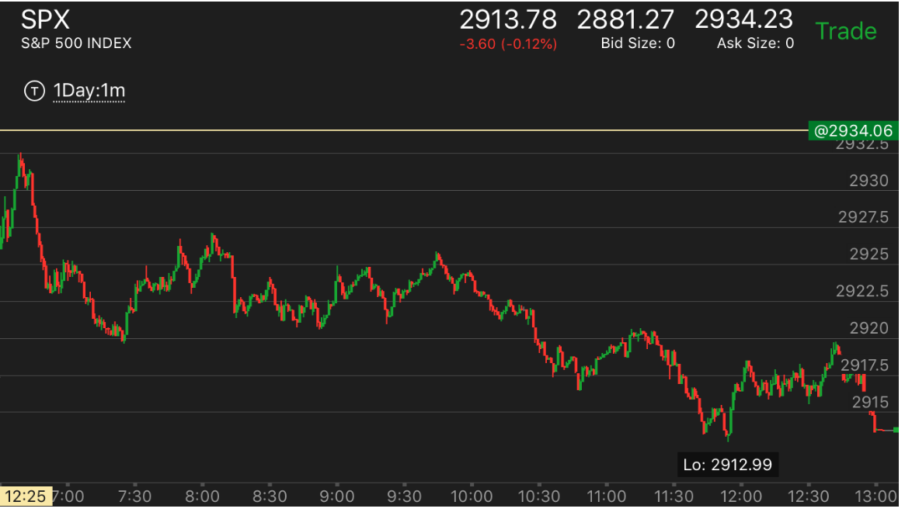
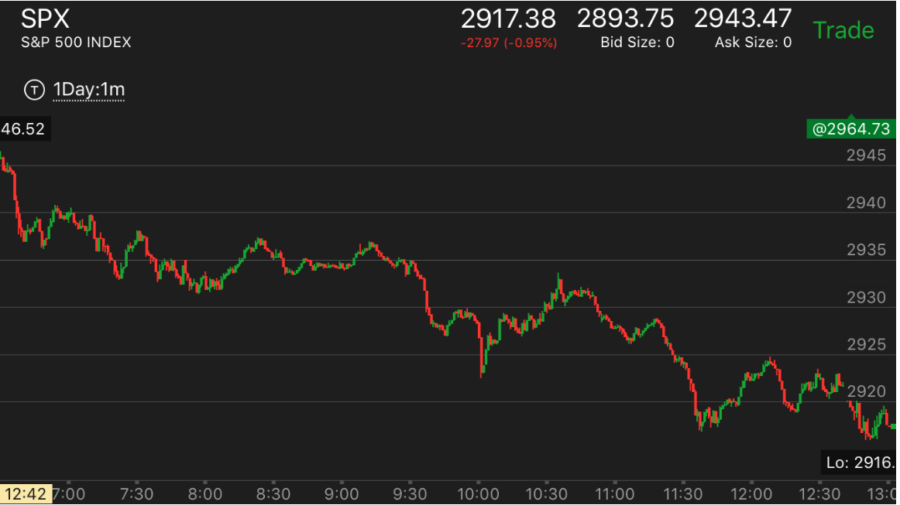
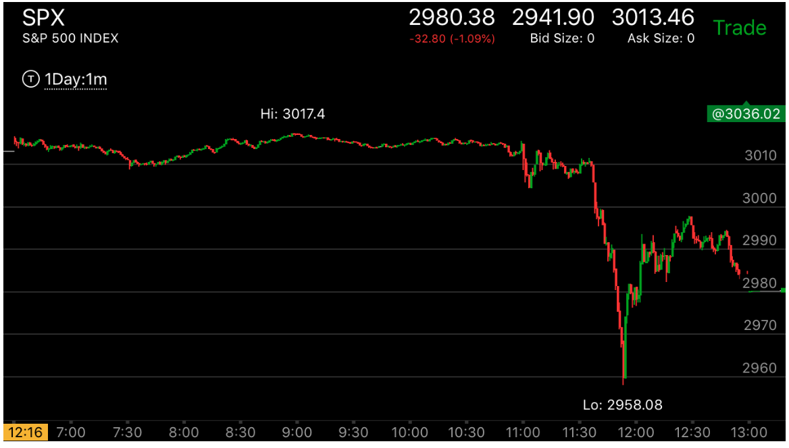
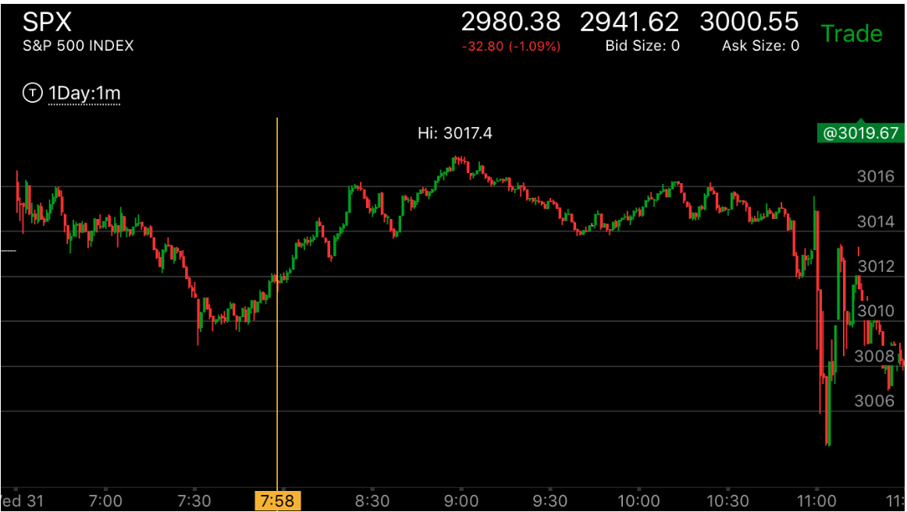

趋势当中，出现了短暂的新低/新高，立刻拉回
- 要注意这个是处于趋势当中，出现了新高新低，而不是逆势出现了新高新高新低。以跌势为例，它本来就处于跌势，
然后一下创了新低，一般是Fed Meeting这样的新闻。然后快速拉回。徘徊后，或者出现两段上涨后，越过前面的走平点，
再次下跌，这次下跌一定会超过前面的低点。而且这次下跌才是第一浪。
- 如果是逆势如此，比如在跌势当然，突然冲高，创新高，一般趋势仍然是跌势，但是可能跌势未来会反转。
但是也不能不管不顾的去做多，期待未来一定反转。可能跌的很深后，才会反转。那个时候，我不一定抗的住。

图示：7：28出现了倾斜向下的走平。产生了新低。然后快速反弹。
说明未来一定会低于前面这个低点。

图示：8：00走平的时候，出现了新低，然后大幅反弹。这样的走势，未来一定会创新低。
但是也不能不管一切的做空。而是要等到真空填补以后，或者出现了跨越走势。

图示：大盘在12：10的时候，出现了反转，进入跌势.2：00 Fed Meeting后，
出现了新低，立刻拉回。这个不代表反转了。而且仍然处于跌势。


图示：9:00反转后，它开始缓慢下跌，处于跌势。11：00Fed宣布后，它快速创了新低后，
立刻拉回。这个说明它仍然出现跌势，拉回后，徘徊很久，然后大跌，这个才是第一浪下跌。